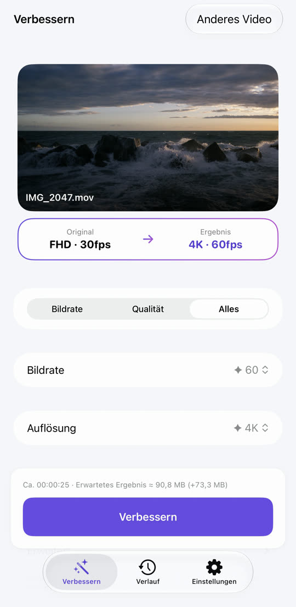
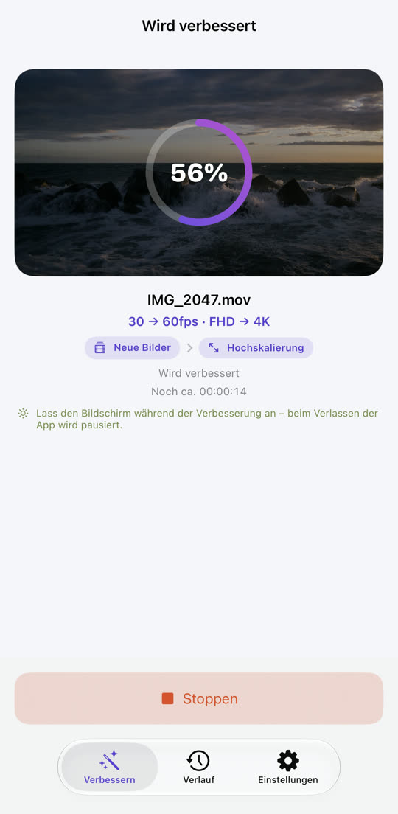
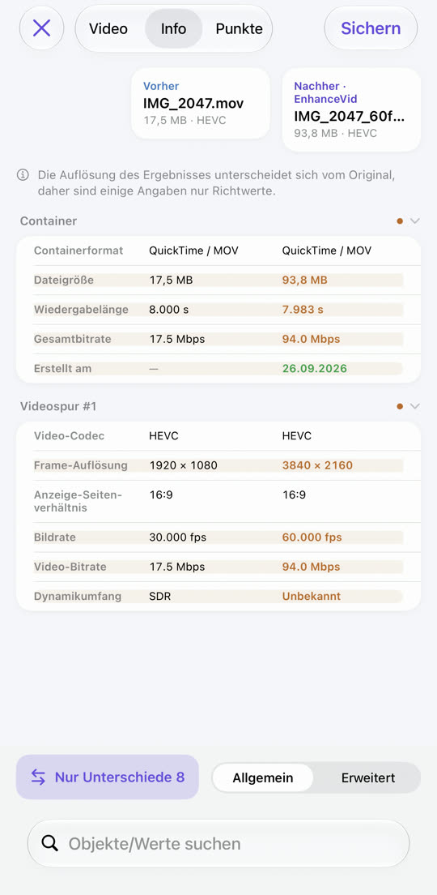
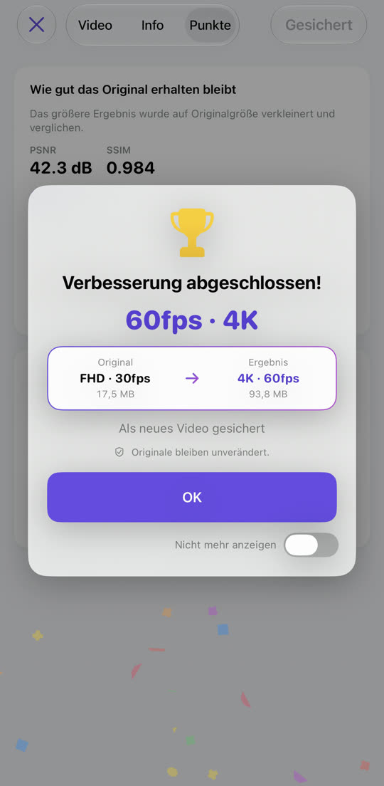

Ruckelndes Video, jetzt flüssig.
Weiches Video, jetzt scharf.
30 auf 60 fps, Full HD auf 4K. EnhanceVid berechnet neue Bilder zwischen den aufgenommenen und erhöht die Auflösung für mehr Details. Alles läuft auf deinem iPhone, das Ergebnis wird als neues Video neben dem unveränderten Original gesichert.
Laden im App StoreKostenlos · iOS 26 oder neuer · iPhone · iPad · Mac mit Apple Chip

Weniger Unschärfe, mehr Details.
Die Auflösung wird mit Apple MetalFX hochskaliert. Zieh die Linie, um zu vergleichen.

 OriginalVerbessert
OriginalVerbessert
Beispielbild – ein vergrößertes Original in niedriger Auflösung neben der verbesserten Version.
Ruckeln wird zu fließender Bewegung.
Zwischen den Originalbildern werden neue Bilder berechnet. Szenenwechsel werden nie vermischt – keine Geisterbilder.
Die Bewegung ist hier übertrieben, damit der Unterschied sichtbar wird.
Auswählen, starten, vergleichen, sichern.



Alles drin, was du brauchst.
Körnige Aufnahmen bei wenig Licht werden sauber. Auf unterstützten Geräten.
4K 60 fps auf 30 fps, 4K auf Full HD – auch Herunterrechnen geht.
Nebeneinander abspielen, Datentabelle und Qualitätswerte (PSNR, SSIM, optional VMAF).
HDR- und Dolby-Vision-Videos vom iPhone bleiben im Ergebnis HDR.
Videos aus Fotos und der Dateien-App, auch MKV, WebM und AVI.
Das Ergebnis wird als neues Video gesichert. Das Original wird nie geändert oder gelöscht.
Nichts wird hochgeladen, kein Konto nötig. Kostenlos, durch Werbung finanziert – Datenschutz